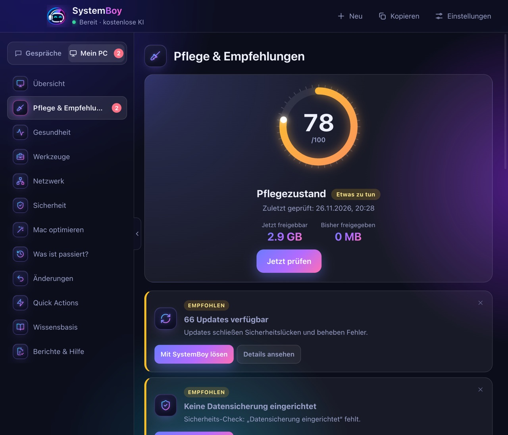
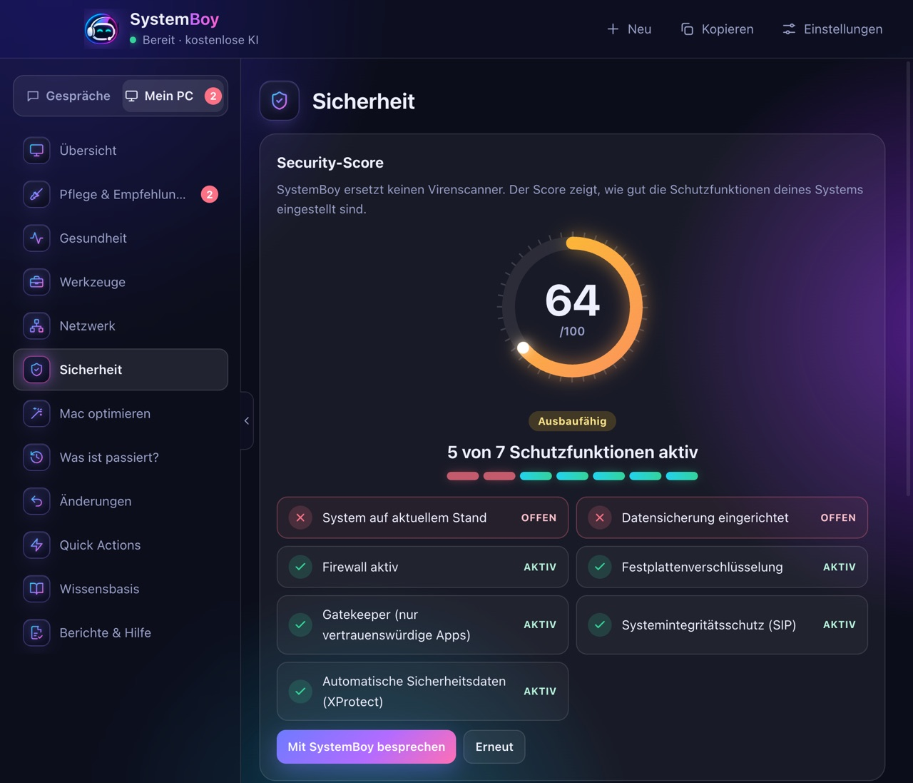
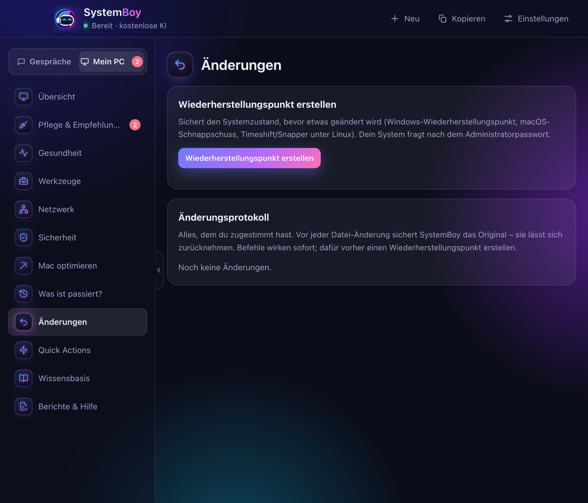
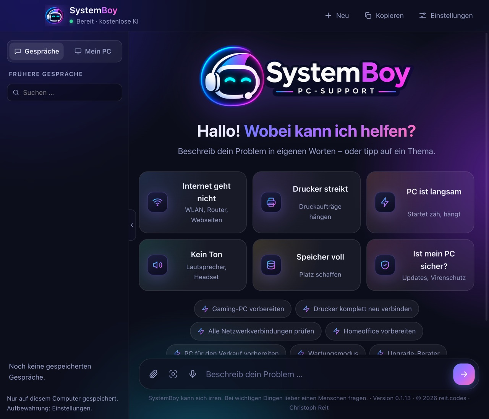
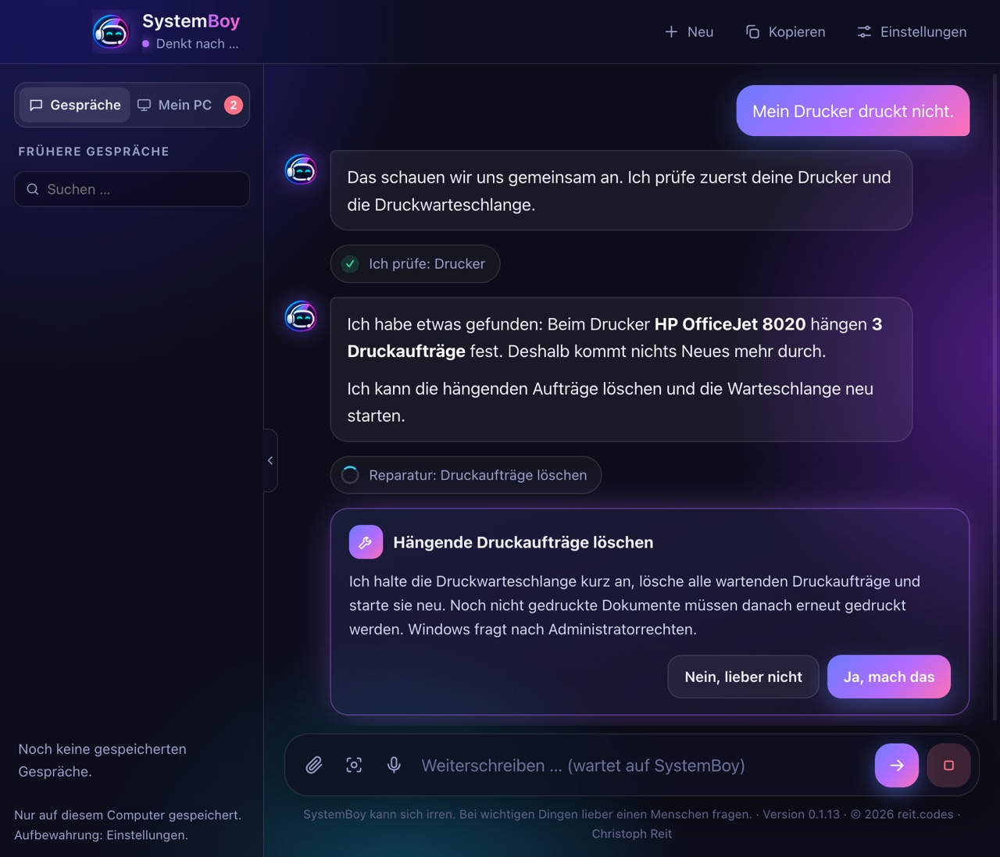
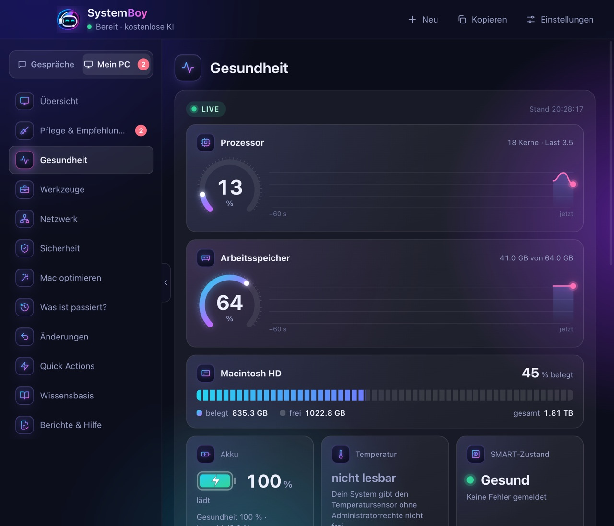

Ein echter Agent
SystemBoy führt Befehle aus, ändert Einstellungen, installiert und entfernt Programme – über OpenCode, einen bewährten Open-Source-KI-Agenten. Kein Copy-&-Paste von Befehlen aus dem Internet.
Funktionen
Nur dass SystemBoy immer Zeit hat, nichts kostet und nie die Augen verdreht. Er untersucht deinen Computer, findet die Ursache und behebt sie – jeder Schritt erst nach deiner Zustimmung.
Sag in eigenen Worten, was nicht geht – oder tipp auf ein Thema. Fachbegriffe? Brauchst du nicht. Ein Bildschirmfoto der Fehlermeldung hilft zusätzlich.
SystemBoy prüft dein System mit festen, nur lesenden Werkzeugen: Netzwerk, Treiber, Protokolle, Speicher, Abstürze. So findet er die tatsächliche Ursache.
Du siehst genau, was ausgeführt werden soll und warum. Erst wenn du zustimmst, passiert etwas. Datei-Änderungen lassen sich rückgängig machen.
SystemBoy führt Befehle aus, ändert Einstellungen, installiert und entfernt Programme – über OpenCode, einen bewährten Open-Source-KI-Agenten. Kein Copy-&-Paste von Befehlen aus dem Internet.
Geräteprofil mit Hardware, System und Programmen. SystemBoy merkt sich deinen PC und knüpft an frühere Gespräche an.
CPU, RAM, Laufwerke, SMART, Akku-Verschleiß, Temperatur und Laufzeit auf einen Blick.
Zeitleiste der letzten 14 Tage: Abstürze, Updates, Treiber, Installationen, Netzwerk. „Seit wann?“ – SystemBoy findet die gemeinsame Ursache.
Virenschutz, Firewall, Verschlüsselung, Updates, Backup und Ransomware-Schutz als verständliche Punktzahl – plus Prüfung von Signaturen, Browser-Erweiterungen, Ports, Zertifikaten und Datenschutz-Einstellungen.
Wiederherstellungspunkt mit einem Klick. Vor jeder Dateiänderung sichert SystemBoy das Original – Rückgängig jederzeit.
Eigene Ein-Klick-Abläufe: „Gaming-PC vorbereiten“, „Drucker neu verbinden“, „PC für den Verkauf vorbereiten“ …
Meldet sich, bevor es knallt: Speicher fast voll, SMART-Warnung, neue Abstürze, Akku am Ende. Mit Aufgabenplaner und Wartungsbericht.
Windows: vorinstallierte Apps, Werbung, Telemetrie, Copilot und Recall entfernen – mit Win11Debloat in der neuesten Version. Mac: Datenschutz, Siri, Finder, Dock, Firewall und vorinstallierte Apps – jede Änderung exakt umkehrbar.
Alle Gespräche in der Seitenleiste – durchsuchen, weiterschreiben, umbenennen. Aufbewahrung frei einstellbar.
SystemBoy merkt sich, was es über deinen PC herausfindet – einfach erklärt oder technisch, je nach deinem Wissen. Per Chat oder von Hand bearbeitbar.
Technischer Bericht für deinen IT-Techniker – Benutzername, E-Mail, IPs und Seriennummern werden vorher entfernt.
Erklärt nach jeder Reparatur, was die Ursache war und wie du es künftig vermeidest.
Bildschirmfoto mit eingebautem Werkzeug aufnehmen, markieren, verpixeln – SystemBoy liest die Fehlermeldung.
Unter der Haube arbeitet OpenCode, ein quelloffener KI-Agent (MIT-Lizenz). Er ist in SystemBoy bereits enthalten und wird automatisch aktuell gehalten. SystemBoy ist ein unabhängiges Projekt und nicht mit Anomaly, dem Unternehmen hinter OpenCode, verbunden.
Drei Funktionen, die zeigen, warum SystemBoy mehr ist als ein Chat – mit echten Bildern aus der App.

SystemBoy prüft deinen PC regelmäßig im Hintergrund und zeigt einen Pflegezustand von 0 bis 100. Jede Empfehlung hat eine passende Aktion – oft mit einem Klick erledigt.

Virenschutz, Firewall, Verschlüsselung, Updates, Backup und Ransomware-Schutz – zusammengefasst in einer verständlichen Punktzahl.

Alles, dem du zugestimmt hast, steht im Protokoll. Vor jeder Dateiänderung sichert SystemBoy das Original – ein Klick holt es zurück.




SystemBoy ist an keinen Anbieter gebunden. Nach der Anmeldung wählt er automatisch ein passendes Modell.
Integrierter KI-Zugang ohne Anmeldung, mit Tageslimit. Einfach loslegen.
ChatGPT Plus/Pro, GitHub Copilot, Grok, Poe, GitLab Duo, DigitalOcean.
Claude, Gemini, OpenRouter, Groq, Mistral, NVIDIA – über 300 Anbieter, viele mit Gratis-Kontingent.
Ollama oder LM Studio auf deinem Rechner – wird automatisch erkannt.
Funktioniert mit
Erklärt ohne Fachchinesisch, Schritt für Schritt, mit großer Schrift und Diktierfunktion.
Die Eltern rufen schon wieder an? SystemBoy hilft vor Ort – und das Support-Paket zeigt dir, was los ist.
Weniger Ausfallzeit, Homeoffice-Check, Drucker, VPN, Wartungsbericht.
Ports, Dienste, Ereignisprotokolle, Crash-Dumps, Zertifikate – schneller als jede Konsole.
Lade SystemBoy herunter und lass ihn nachsehen. Kostet nichts, macht nichts ohne dich.